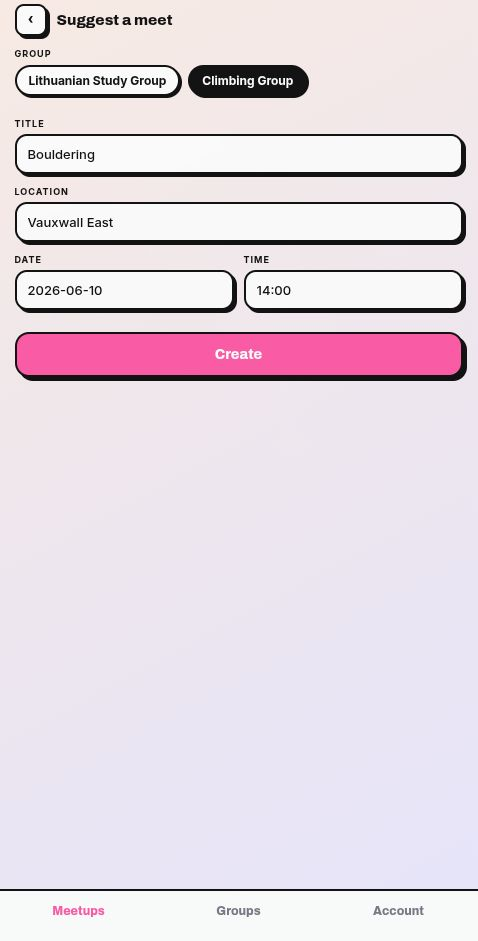
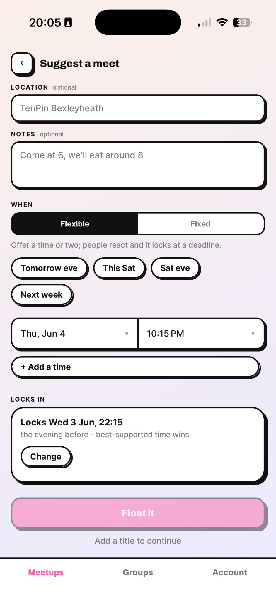
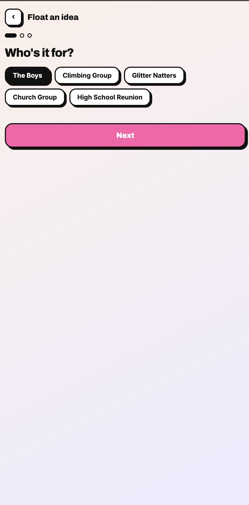
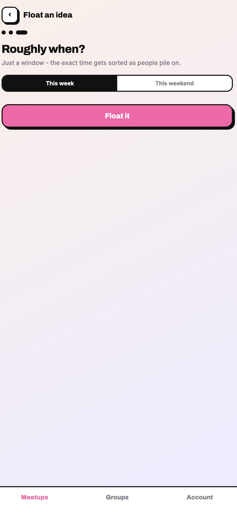
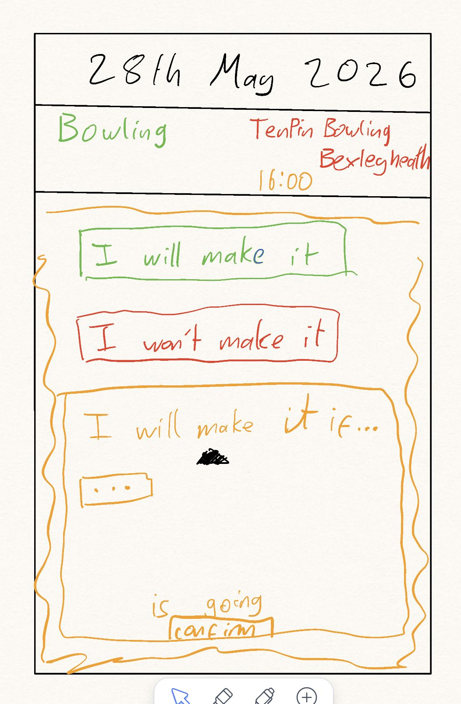
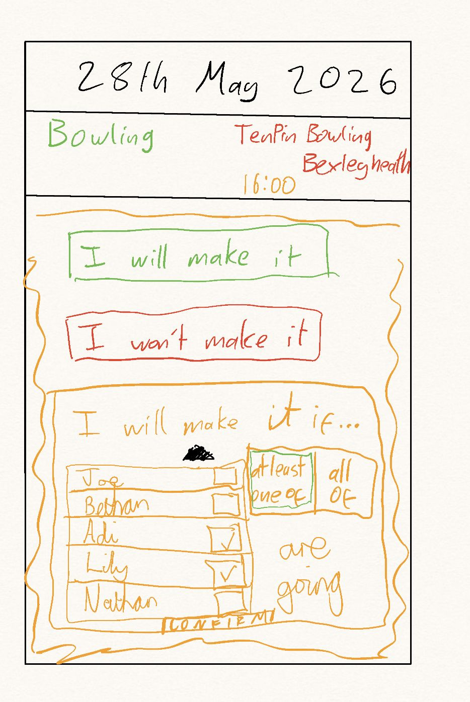
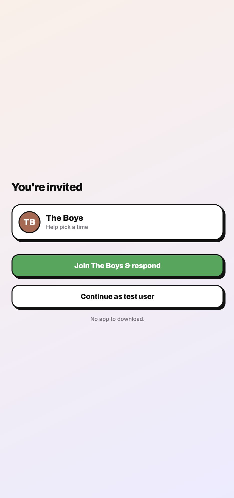
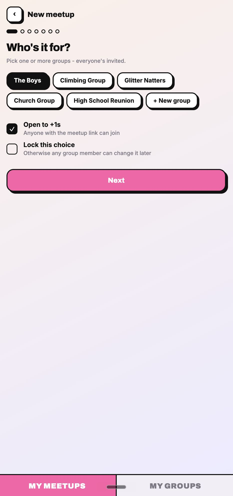
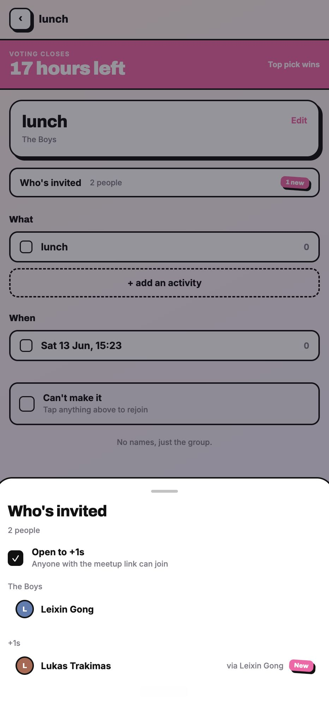

No organiser. No maybe - just the whole group, there.
Nelson · Lukas · Noah · James
Meet Vasanth
•Age 21
•Studies Law at St. Andrews
•Enjoys playing volleyball and board games
•Loves to cook for his friends
•Extroverted and reliable
The Organiser
Vasanth's Christmas break, mapped as he felt it
The organiser's problem
Vasanth loves to meet his friends, but organising is difficult and chasing replies from group members is frustrating.
Meet Milly
•Age 19
•Studies English Literature at St. Andrews
•Likes to play cello and read
•Recently joined her university's netball society
•Shy and introverted
The Participant
Milly's netball social, mapped as she felt it
The participant's problem
Milly would love to engage with her netball society's socials more, but she is hesitant because she wants to be sure her friends are going too.
Research
To better understand this problem, we interviewed university students about their social lives.
Eddie, 21
Psychology · Goldsmiths
The organiser
“If I drummed up the plan, and it’s taken considerable time - logistics, pricing, whether everyone’s okay with it - and then it falls through after all of that, that’s quite frustrating.”
Chloe, 19
Int. Relations · King’s College
The participant
“As days went past, the meetup got more drawn out, second thoughts crept in, and more and more people ended up pulling out.”
Luca, 20
BioChem · Oxford
The conditional
“If I’m meeting a friend of a friend, my attendance is conditional on my friend being there. I’ll wait for them to respond first, then decide.”
Two key stakeholder groups
1. Suggestors
One sided and exhausting. Awkward to push for replies.
2. Participants
Uncertainty compounds uncertainty. Some people's participation is contingent on others.
The most connected generation - and the loneliest
70%
less time 15-24s spend with friends in person than two decades ago.
US Surgeon General, 2023
40%
of UK 16-24s feel lonely often or very often - the loneliest age group.
BBC Loneliness Experiment, 2018
76%
of young adults say seeing friends is how they look after their wellbeing.
ONS, Social Trends, 2025
Plans dying is the norm.
We surveyed 47 people about how they plan meet-ups. The pattern is everywhere.
87%
send a “maybe” or delay their reply to a plan they are unsure about.
60%
say the meet-up time gets moved half the time or more.
50%+
say over a third of their meet-ups never make it out of the chat.
Almost nobody gives a straight answer
“When you are only slightly unsure you can make a plan, what do you send?” · n=47
A “maybe” or delay
87%
A clear yes / no
13%
Opportunity - how might we
How might we reduce hesitancy in undergraduate friend groups when planning to meet up so that groups go from frustrating ‘maybe’ responses to a clear consensus?
User Story
As a social member of my friend group who tends to organise things
I want to be able to easily suggest meetups to my friends
So that I can see my friends more without the frustration of chasing responses
Our initial design


“I could see this being used to just check for people's availability - sending out a vague idea of ‘I want to meetup’ and seeing what everyone wants to do.”
“Having a set time seems quite restrictive - it would be nice to agree on a time within the group.”
“It's not immediately obvious why there's a flexible and fixed option for times.”
After some refinement


“
These options are quite confusing - I don't really understand when you would ever use the rough plan option.
- usability test
User Story
As a new and introverted member of a friend group
I want to only attend social events if I already know people going
So that I feel comfortable
Initial mock-up
Conditional attendance - “I'll go if…”


“It's either I'll go if one person goes, or if a group of people go. I don't think I'd need something this complex.”
“There's gotta be an and/or type thing with the ifs - I'll go if Adi and Lily are going, or if either of them are going.”
“These two options are definitely the things I'll be thinking about if it were a meeting where I'd conditionally go.”
One plan, decided live.
Two seeded phones, the real deployed app: send a plan → the group +1s times and activities → the deadline locks → a second phone answers “I’ll go if” → “you and 4 others are in”.
Watch for
No organiser - it’s anonymous
The group sees the plan, never who sent it.
Watch for
Counts public, names private
You see momentum, never who voted.
Watch for
“I’ll go if” resolves at lock
The blind moment resolves server-side.
And the curve inverts
Same Friday, same friends. The faint line is Vasanth's journey from before - the same plan in the group chat. BeThere inverts it.
User Story
As someone wanting to organise a meetup for my friends
I don't want to have to convince people to download a new app
So that I can save time and avoid frustration
Our initial design
Create a group
Invite with a join code
Share the meetup

Join - no app to download
In his words
Hear it from Luca
on onboarding friends
Joining, with no app to download.
On a brand-new device: open the invite link → “Continue” → you’re in the plan and can respond. No install, no account hurdle.
Watch for
Zero install
Watch for
Opens in the browser
Watch for
Instantly in the plan
User Story
As a student in numerous friend groups
I want to suggest meetups bringing together several groups of people, and to allow friends to bring along their friends
So that I can invite people I don't know who would improve the event
After some refinement


“
Going to a group event is a lot about the chemistry between the group. If someone was there I didn't really know, it might ruin that.